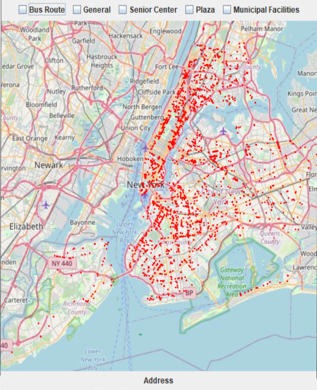

ACMU - Platform for African Content Moderators
Princeton HCI course partnership with the African Content Moderators Union. Ran focus groups with members in Nigeria and Kenya to surface unmet needs - governance, job postings, mental health, anonymity, and crisis-response. Evaluated 7+ existing platforms (Discord, Team Blind, 7 Cups) against member-defined needs. Designed low-fidelity wireframes on iPad → iterated to high-fidelity Figma mockups covering full visual identity and accessibility. Led rebrand concept design against five industry competitors. Mockups served as direct development blueprints.
Princeton HCI Project ↗AI Companionship Data Donation Platform
Senior thesis advised by Prof. Manoel Horta Ribeiro. Designed an end-to-end participant experience - consent → upload → review → redact → export → donate - for a sensitive AI conversation data-donation tool. Key innovation: a chat-style review interface (instead of a table) matching how participants naturally read conversations, with inline PII flagging and selective redaction controls. Ran a recruitment study; 0% conversion rate informed concrete trust and onboarding fixes.
Senior Thesis ↗Agentic AI Data Standardization - Verisk Analytics
Software Engineering Intern on the Generative AI team at Verisk Analytics, Jersey City. Designed and built an agentic AI workflow using AWS Bedrock, S3, and Streamlit that reduced data standardization time by 95%. Worked closely with end users to shape the interface around their actual review process - a product design and engineering hybrid.
Verisk Analytics ↗Security & Accessibility Empirical Study - U of M
Conducted a large-scale empirical study of 2,500+ bug reports at the intersection of accessibility and security at the University of Michigan, Flint. Surfaced usability gaps relevant to inclusive design - where security vulnerabilities actively harm accessible user experiences.
View Research ↗CuisineCompass
Culinary platform offering a vast collection of recipes with robust filtering and search functionalities, catering to diverse tastes and dietary preferences. Built with React and a custom backend.
GitHub ↗Princeton Data Bowl - Health Expenditure Prediction
Predict health expenditure as a percentage of GDP using various health-related indicators. Built and evaluated ML models on real-world public health datasets for the Princeton Data Science Bowl competition.
GitHub ↗Full-Stack Course Project - Princeton University
Served as UI Designer for a Princeton full-stack web application. Created high-fidelity mockups in Figma prior to development, defining layout, component hierarchy, and visual style - ensuring design and implementation stayed aligned throughout.
View Mockups ↗
Touring New York
Guides tourists with offline access to New York City seating locations. Built graph algorithms to compute optimal touring routes across the city.
GitHub ↗